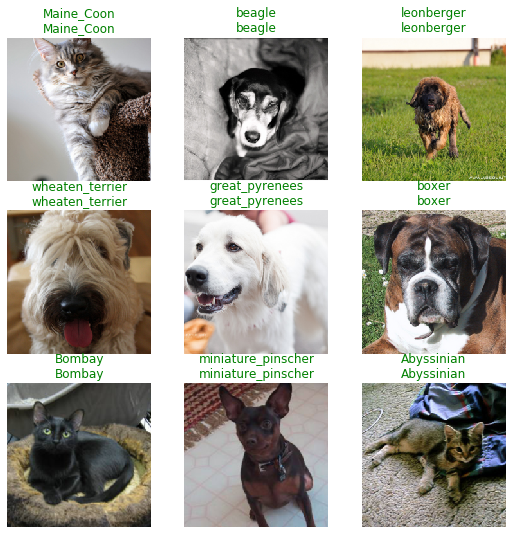
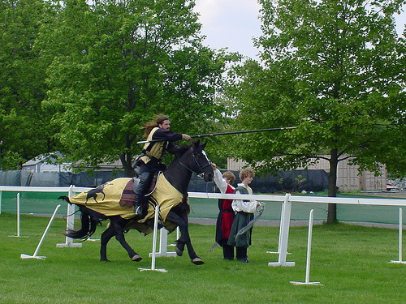
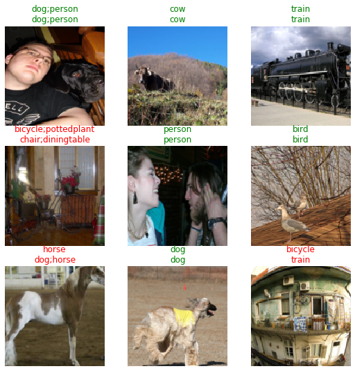
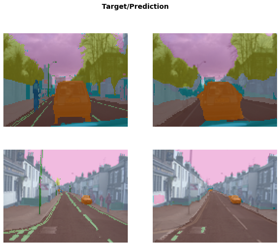
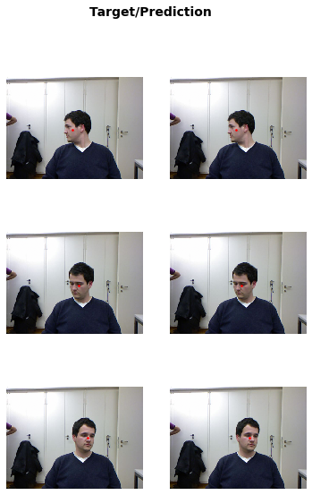

Showcase of simple machine learning applications for computer vision with transfer learning for fast implementations.
Machine Learning
Computer Vision
fastai
Author
Borja Requena
Published
November 14, 2020
This post is part of a series in which we showcase typical machine learning applications in various fields: computer vision, natural language processing and tabular data (for now). The motivation behind this series was teaching machine learning at the MSc in Photonics (UPC).
In this post series, we showcase some of the main or most common applications of machine learning to illustrate the capabilities and state of the field. It is mainly intended to provide examples for those who are not familiar with machine learning or that are starting with it. Hence, the focus is put on the main concept of the task and the results, without diving too deep into the architecture details and parameters. We mainly use fastai to perform the demonstration and we encourage the reader to look at their wonderful course and book.
We leverage pre-trained models that have been trained for other tasks in massive datasets. Fine-tuning these models to work for our various specific tasks, we achieve state-of-the-art results while speeding up the training process by orders of magnitude. This technique is known as transfer learning.
Introduction
Computer vision is the field of machine learning that deals with images, be it medical images, our dog’s cutest picture, some grayscale retro portrait or 8k videos. Processing these images, we can perform all sorts of tasks from identifying components within them to creating entirely new ones.
Computer vision constitutes one of the most successful fields of machine learning. While in other fields, such as natural language processing, the progress has been slower, machines have long shown super-human results in the field of computer vision. For instance, a remarkable work shows how deep learning can use retinal images to detect a patient’s age, gender, smoking status and systolic blood pressure, as well as inferring several risk factors, while we did not know it was even possible, a priori, to infer such information from those images.
Image classification
The first task that comes into mind when we talk about computer vision is image classification. It consists on assigning a certain label to a given image among all the possibilities. Here, we illustrate the process with a rather funny example in which we aim to classify pet images into their respective breeds.
The dataset contains images of cats and dogs belonging to 37 different breeds. Let’s have a look at some samples to get a better understanding of the task at hand.
We have images of dogs and cats that appear as the unique animal and main body of the image. Our job will be to tell the breed to which the animal belongs to. As mentioned in the introduction, instead of training a whole model from scratch, we will take a pre-trained model and adapt it to classify these cats and dogs.
Skippable details about transfer learning: > In this case, we will use a resnet34 architecture trained on the Imagnet dataset. To get an idea, ImageNet has +20k classes to distinguish with, including several dog breeds. Given that the original task has a relationship with our current one, we can leverage this prior experience to classify our 37 pet breeds. Nonetheless, we have to adapt the model in order to output the pet breed prediction, changing the last trained layer by a fully connected layer with 37 outputs.
At the beginning of the training, the main body of the model is already trained to extract features from images. However, the last bit that we append contains random weights. Therefore, it is convenient to, first, train the last bit for a few epochs before training the whole model at once.
What we will do is to freeze the model up to the last, recently appended layer. This way, there are no updates in the pre-trained part and the new part is adapted to work with it. Then, we unfreeze the model, allowing the whole thing to keep learning. Nevertheless, without getting into much detail, it is reasonable to think that the first layers of the model require less training that the final ones, provided that they focus on more generic aspects of the image, such as edges or color gradients. Therefore, we will set the learning rate of the initial layers to be lower than the last layers.
The main idea is: - Freeze and train last bit at a high learning rate - Unfreeze and train everything together with lower discriminative learning rates
Fastai has a built in functionality learn.fine_tune that handles the freezing/unfreezing for us, which is what we will be using for the rest of the notebook, after this example.
Let’s train the model!
Code
learn = cnn_learner(dls, resnet34, metrics=error_rate).to_fp16()learn.freeze()learn.fit_one_cycle(3, lr_max=1e-3, pct_start=0.99)learn.unfreeze()learn.fit_one_cycle(6, lr_max=slice(5e-6, 5e-4)) # Train first layers 100 times slower than last ones
epoch
train_loss
valid_loss
error_rate
time
0
3.621868
1.109150
0.296346
00:11
1
1.263898
0.269706
0.082544
00:11
2
0.606038
0.235287
0.078484
00:11
epoch
train_loss
valid_loss
error_rate
time
0
0.372174
0.201209
0.068336
00:13
1
0.334736
0.245479
0.078484
00:13
2
0.273055
0.197853
0.062923
00:13
3
0.178965
0.169431
0.054804
00:13
4
0.148987
0.167509
0.058187
00:13
5
0.112826
0.166959
0.056834
00:14
With transfer learning, in less than three minutes of training, we can classify pets into 37 breeds with an error rate of about ~5%. Let’s have a look at some of the images in the validation set with the model predictions.
Code
learn.show_results()

All the examples are properly classified. In order to better grasp the limitations of the model, we can check the confusion matrix, which will tell us what are the hardest breeds to classify for the model. In the confusion matrix, every row represents the actual label of the image, while the columns indicate the prediction of the model. Thus, a perfect classifier would have a diagonal confusion matrix.
The main error comes from the model mixing up some American pit bull terriers with Staffordshire bull terriers. There also seems to be some confusion between ragdolls and birmans. A quick google search reveals that we would probably do worse, so we can forgive the model for this mistake :)
Multi-label classification
Within image classificaiton we, sometimes, encounter applications in which, rather than assigning a single label to each image, we need to provide a list of labels. This is known as multi-label classification and it is typically applied in situations in which we need to enumerate certain categories that appear in the image.
I find it pretty intuitive to understand this kind of tasks with the analogy of a kid to whom we ask “what do you see in this image?” and the kid enumerates every single thing in it: a tree, a dog, the sun, a lake, grass, a house, etc. Nonetheless, it will not be able to tell us things that it does know yet or that are deemed irrelevant, such as the brand name of the car or that tiny watch in the wrist of a person in an astonishing landscape. In this case, the machine will be our kid and we will tell it exactly which things to identify in the images.
To provide an example, we use the PASCAL dataset. Let’s see how it looks like.
We have a list of images with assigned labels and an indicator telling whether the image belongs to the validation set or not. See that the third image has a label ‘horse person’. It is not a centaur, it’s just two labels: horse and person. Let’s have a look at the image.
Code
f = df.iloc[2, 0]img = Image.open(path/"train"/f)img

Indeed, in the image, there appears a horse and three people. In this dataset there are 20 categories:
Code
labels =set()for L in df.labels.unique(): labels.update(L.split(' '))print(labels)
Hence, among those, the associated categories to the image are ‘horse’ and ‘person’. Let us have a look at some more examples to get an idea of the kind of images that we encounter.
Unlike in the previous task, where all images had either dogs or pets as main body, in this case, we encounter a wide range of different images going from close portraits to general landscape views with many different objects in them. Nonetheless, we will do the same as in the previous example: take a pre-trained model and adapt it to this specific task.
Skippable implementation details: >In this case, we take a resnet50, which is larger than the previous resnet34. The architecture is also pre-trained in the Imagenet dataset and we fine tune it for this multi-label classification. The output layer now contains 20 neurons indicating whether each category appears in the sample.
In less than a minute of training, we are capable of providing all the categories appearing in the given images with an accuracy of ~96%! Let’s have a look at some examples in the validation set.
Code
learn.show_results()

The model has been quite confused by the forth image in which it had to predict bicycle and pottedplant and, instead, it predicted chair and diningtable. This was a tricky one. Nonetheless, the model has failed in much simpler ones, e.g., in the hrose image, it has predicted two categories: horse and dog, and, in the last one, it has predicted it to be a train, while it had to say bicycle. Despite the confusion, we can visualize the model failures and understand, for instance, how it confused the last image with a train. Hence, we can see that it works consistently with some room for improvement.
Image segmentation
In image classification we have related classes with whole images, e.g. telling whether there appears a certain pet breed in the image or whether it contains a horse and a person. In segmentation tasks, instead, the goal is to assign a label to each specific pixel.
This technique has numerious applications in various fields. For instance, in autonomous driving we have to tell which parts of the image are road, traffic signs, pedestrians, etc. On a completely different approach, in biomedical imaging, segmentation is used to tell appart healthy tissue from regions affected by certain diseases, such as identifying tumorous cells among healthy ones.
Here we will show a segmentation example using a subset of the CamVid dataset for autonomous driving. Let us have a look at some examples to get a better understanding of the task at hand.
Each pixel in the images is assigned a label indicating whether it is a tree, a traffic sign, a car, a bike, a building, a pedestrian, etc. Here, we see the images overlapped with the color-coded label mask to ease the visualization. The goal is, given an image, generate the color-coding mask, that is, another image. Again, we will leverage a pre-trained model to perform this task.
Skippable implementation details: >Just as in the previous cases, we take the same pre-trained resnet34 and adapt it for our task. In this case, we not only limit ourselves to change the last layer of the network but, also, we also modify its architecture. We use the weights from the pre-trained network and convert it into a U-Net.
Given that the dataset is rather small, the training is ridiculously fast. Here, we do not have a metric, such as error rate, that allows us to get an idea of the overall performance. Therefore, we will ask the model to generate the classification mask for some images and see how it goes in a rather qualitative way.
Code
learn.show_results(max_n=4, figsize=(10, 8))

On the left, we see the real color-coding and, on the right, the model prediction. We can see that all the buildings, trees, cars and traffic signs are consistently colored, so the model is doing a great work here. The most difficult part seems to be the identification of road lines as well as accurately defining the shapes. The model has room for improvement and it would certainly perform better with a larger training dataset.
Beware, though, the model has entirely missed a cyclist in the first image, WATCH OUT!!
Image regression
The last computer vision application that we will illustrate (for now) is image regression. A regression task is characterized by assigning a real number to a sample. Hence, rather than relating labels to the images, the model will have to provide a continuous value. We encounter this kind of tasks in various different fields, for instance, we can infer the temperature of the soil or other atmospherical properties from satelite images or identify the position of certain objects within them.
To provide an example, we will use the Biwi kinect head pose dataset. The dataset is composed of frames from videos of people in which, in each frame, we have the coordinates of their head center. Let us have a look at a few examples to get a better picture of the task.
Every image is provided with the 2D relative coordinates of the center of the head with respect to the center of the image, which is represented as a red dot. Hence, every image is assigned two continuous values (2D coordinates) between -1 and +1.
Let’s have a look at the target prediction of a five samples.
As in the previous applications, we leverage transfer learning to quickly solve this task.
Skippable implementation details: >Again, we take a pre-trained resnet34. In this case, provided that the output are two continuous values, there will be two neurons in the output layer. We will restrict the value of each neuron to be within the (-1, 1) range with a sigmoid\(S(x)\) activation function such that the output \(O(x)=S(x)(\text{high}-\text{low})+\text{low}\). This way, we reduce the amount of things the model needs to learn and prevent it from doing tremenduous mistakes.
With four minutes of training we reach a mean squared error (valid_loss) of \(\sim10^{-4}\), meaning that, on average, the error in the predicted position is of the order of \(\sim10^{-2}\). Since we do not know how bad it is to fail in the second decimal, let’s have a look at some examples in order to see whether it is qualitatively awful or it’s something we can’t even tell.
Code
learn.show_results(nrows=3)

The model does great! Again, on the left, we have the real coordinates and, on the right, we have the prediction. The model error is barely noticeable so, even thogh we could probably refine the model to further lower it, this regressor is perfectly fine to be used within any related application. For instance, this could be used to detect the movement of a player in front of a camera in a virtual reality game.
Other applications
Within computer vision, there are other applications that are not covered in this notebook. This is a work in progress and, with time, will become more complete. For instance, we have not covered the new fassionable diffusion models.